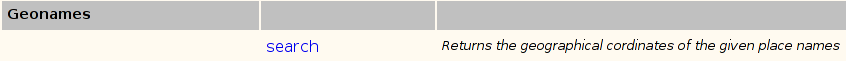
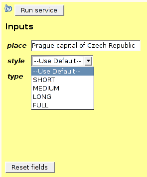
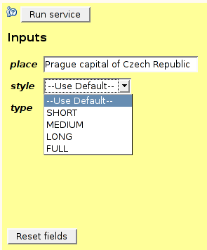
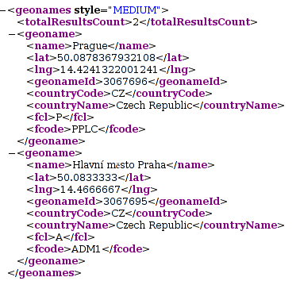

appl: Search [
documentation: "Returns the geographical coordinates of the given place names"
groups: "geonames"
nonemboss: "Y"
supplier: "http://ws.geonames.org/search"
comment: defaults
comment: "help http://www.geonames.org/export/geonames-search.html"
]
string: place [
qualifier: q
default: "Prague capital of Czech Republic"
help: "Search this place in all possible attributes:
place name, country name, continent, admin codes, etc.
The search is using an AND operator."
]
list: type [
min: 1
max: 1
values: "xml;json;rdf"
default: xml
prompt: "The format of the returned document"
]
list: style [
min: 1
max: 1
values: "SHORT;MEDIUM;LONG;FULL"
default: MEDIUM
prompt: "Verbosity of returned XML document"
]
outfile: result [
]
Go through the ACD file above and check with the metadata guide what the individual data
types and attributes mean.
ant gengowlab
build/run/run-cmdline-client -protocol local -name geonames.search -i build/run/run-cmdline-client -protocol local -name geonames.search -w -r build/run/run-cmdline-client -protocol local -name geonames.search -w -r type json place "Saffron Walden" build/run/run-cmdline-client -protocol local -name geonames.search -w -r type json place "Saffron Walden" style FULL build/run/run-cmdline-client -protocol local -name geonames.search -w -r type rdf style FULL
ant jaxdeployYou can also deploy the same services using an old-fashioned protocol that is understood and used by the old Soaplab1 clients:
ant axis1deploy

you should see the new service panel:
 

Clicking on the Run service button results in the result page like this:

Or, with the FULL style, this one.
{kind=link}